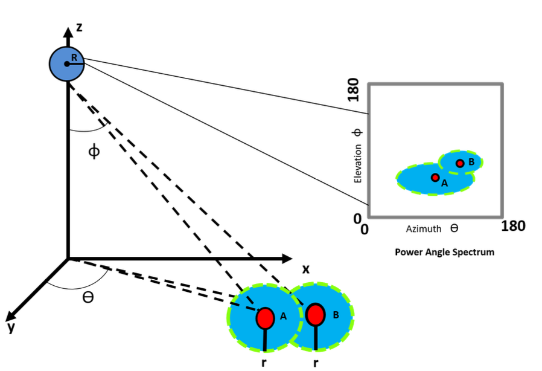

|
Fatima Ahsan
I am a PhD in electrical and computer engineering from Rice University, Houston, TX, USA.
I was a member of the Rice Neuroengineering Initiative, where I was advised by Dr. Behnaam Aazhang for my PhD dissertation at Rice University.
At Rice University, I worked on developing a novel deep brain stimulation technique, resulting in a US patent and multiple first-author publications.
I was awarded Rice Innovation Fellowship and served as the Entrepreneurial Lead for the NSF-Icorps program, where I led over 100 stakeholder interviews and helped secure $50,000 to explore our neurotech's clinical translation.
Email /
CV /
Google Scholar /
LinkedIn /
Github
My research interests lie in developing signal processing, data science/ machine learning, and multi-physics modeling for driving biomedical innovation.
|
|
|
|
EMvelop stimulation: minimally invasive deep brain stimulation using temporally interfering electromagnetic waves
Fatima Ahsan, Taiyun Chi, Raymond Cho, Sameer A Sheth, Wayne Goodman, and Behnaam Aazhang
Journal of Neural Engineering, 19 (2022)
The first study to explore and demonstrate the benefits of high-frequency electromagnetic brain stimulation over existing approaches. I developed a finite-element model in COMSOL and an optimization framework in MATLAB
to optimize electromagnetic field propagation and heat transfer in brain tissue. The system achieved a 700× improvement in stimulation targeting
strength over state-of-the-art methods, while fully adhering to IEEE safety limits. This work led to one patent, multiple publications,
and added a novel perspective to the field of non-invasive brain modulation system design using advanced signal processing.
|
|
|
Estimating the Number and Locations of Boundaries in Reverberant Environments with Deep Learning
Toros Arikan; Luca M. Chackalackal, Fatima Ahsan, Konrad Tittel; Andrew C. Singer; Gregory W. Wornell, and Richard G. Barainuk
IEEE ICASSP Conference, 2025
Contributed to U-COTANS, a deep learning system for estimating the number and location of reflective boundaries in reverberant environments.
I supported the development of the U-Net segmentation framework, enabling robust 2D acoustic scene understanding under low SNRs. This work bridges
physical acoustics and image-based learning for real-world sonar sensing applications.
|
|
|
EMulator: Rapid Estimation of Complex-valued Electric Fields using a U-Net Architecture
Fatima Ahsan, Lorenzo Luzi, Richard G. Barainuk, Sameer A. Sheth, Wayne Goodman, Behnaam Aazhang
Arxiv, 2025
I developed EMulator, a U-Net-based deep learning model in PyTorch, for fast and accurate estimation of high-frequency
electromagnetic fields in the human brain. Trained on COMSOL-generated data, it achieved a correlation coefficient of 0.978 with ground truth while running 1200× faster than physics-based solvers. This work shows the potential of data-driven surrogates in real-time neurostimulation planning and EM wave optimization.
|
|
|
Biophysics of amplitude-modulated giga-hertz electromagnetic waves stimulation
Fatima Ahsan, Aravind C. Govindaraju, Robert M. Raphael, Taiyun Chi, Sameer A. Sheth, Wayne Goodman and Behnaam Aazhang
IEEE Asilomar Conference, 2023
I developed a biophysical modeling framework to investigate how amplitude-modulated GHz electromagnetic waves can selectively trigger neuronal
firing deep in the brain. Using COMSOL and the Hodgkin-Huxley model, I showed that GHz stimulation alone fails to excite neurons, but when modulated
at low frequencies, it replicates the dynamics of traditional low-frequency stimulation. This shows a promise for non-invasive, focused
brain modulation.
|
|
|
Stalkers: A physical-layer solution towards co-existence with WiFi
Fatima Ahsan, Momin Uppal
IEEE WCNC, Barcelona, Spain , 2018
I pioneered the first implementation of an OFDM/MIMO-OFDM wireless transceiver using real-time over-the-air transmissions using software-defined radios (SDRs).
The system involved time and frequency synchronization, frame detection, MIMO channel estimation, and interference cancellation
coding, all in custom signal processing chains. This project pushed the lab into practical MIMO research and marked one of the most
technically demanding yet fulfilling milestones of my journey.
|
|

|
Leveraging massive MIMO spatial degrees of freedom to reduce random access delay
Fatima Ahsan, Ashutosh Sabharwal
IEEE Asilomar Conference, 2017
I developed a novel random access scheme for ultra-dense 5G networks that leverages Massive MIMO array signal processing to spatially resolve user collisions and reduce access delays.
Unlike conventional schemes, mine exploits the spatial structure of the channel to allow multiple users to transmit simultaneously.
I used stochastic geometry to evaluate performance under realistic network densities, demonstrating upto 13x reduction in access delay.
This work reflects my strengths in signal processing, wireless protocol design, and theoretical analysis.
|
|
|
Seeker: Autonomous maze-navigating and ball-potting robot
Fatima Ahsan, K. M. Hasan
ICOSST, 2015
I engineered Seeker, an autonomous robot that navigates mazes, detects colored boxes, and pots matching balls; all in real-time.
I designed a novel sensor linearization and control algorithm that achieved precise motion at 70 cm/s using only a low-cost 8-bit microcontroller.
Seeker achieved a 98% success rate across 40 trials.
Every element, from hardware to control logic, was built from scratch, making this one of the most challenging and rewarding systems I’ve developed.
|
|
|
Gait generation and terrain navigation algorithm design for a self-reconfigurable robot
Fatima Ahsan, K. M. Hasan
RAEE, 2015
Best Final Year Thesis Award
3rd position IEEE Lahore Section Final Year Project Evaluations
For my senior year project, I engineered Chaser—a low-cost, self-reconfigurable robot inspired by modular locomotion systems. I designed and
implemented a dynamic gait generation and terrain navigation algorithm enabling it to walk, wheel, swim, and self-adapt to real-world environments.
The system achieved a 95% success rate across more than 70 trials, demonstrating its robustness.
This project, combining mechanical design, embedded systems, and algorithmic intelligence, earned the Best Final Year Project Award.
|
|
|
Lightning Bolt: A robot designed for the Robowars competition at PsiFi (largest science olympiad in Pakistan)
Fatima Ahsan, K. M. Hasan
LUMS PsiFi, 2012
3rd position
I led the first 5-memebered, all-women team to build Lightning Bolt for LUMS PsiFi (Pakistan’s largest science olympiad). It's a fighting robot for the PsiFi Robowars
competition (similar to the Robot Wars TV series).
This project deepened my understanding of torque-speed tradeoffs, reading motor specs, remote steering, and real-world actuator behavior;
it deepened my understanding of the Electric Machines course and lab. Overall, we were placed 3rd in the PsiFi competition.
This hands-on process, from market research to design, shaped my foundation in applied engineering projects.
|
|
{kind=link}